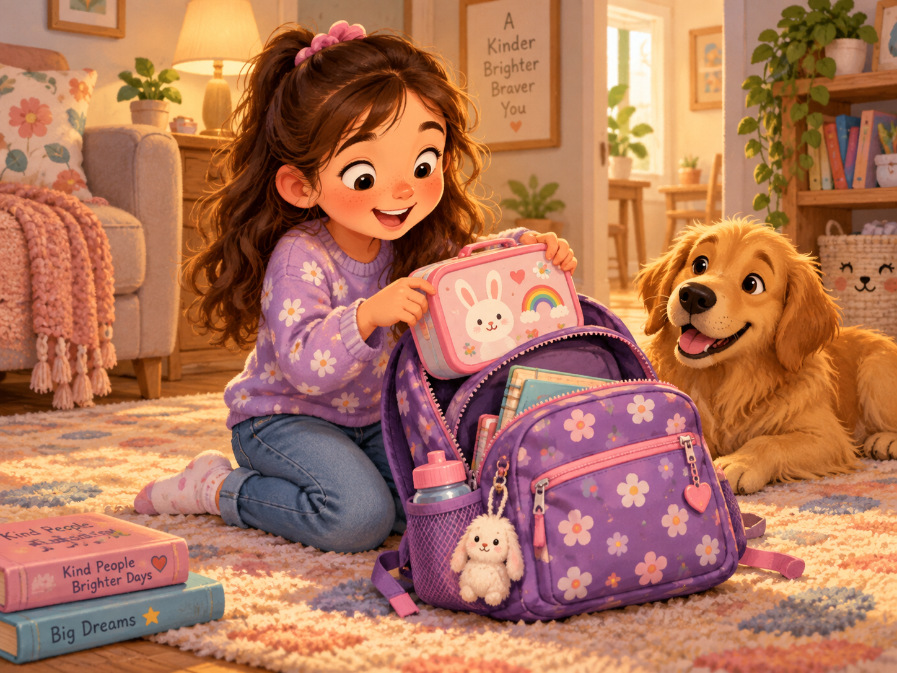

Look at the book I’m holding. Which sentence is correct?

Mic states · click one to show it · T closes
Progress: current step · click one to show it · S closes
Julia states · click one to show it · J closes
Chat states · click one to show it · C closes
Avatar loading

Julia
Your English tutor
Joining...
The Mystery of the Missing Lunch
Mia opened her backpack and noticed something strange.
"My lunch is missing!" she said.
Her friend Noah asked, "Did you check everywhere?"
They looked in the classroom, the library, and the playground.
Suddenly, Mia remembered something.
"I visited my brother's classroom this morning!"
They went there and found her lunchbox on a table.
Mia smiled and said, "The mystery is solved!"
Noah laughed. "Sometimes the answer is closer than you think."
Julia
Your English tutor
Watch clip
Julia
Your English tutor
Congratulations
Please complete all questions to finish this milestone.
Julia
Your English tutor
Congratulations
Julia
Your English tutor
Congratulations
Please complete all questions to finish this milestone.
Julia
Your English tutor
Congratulations
Julia
Your English tutor
Julia
Your English tutor
Julia
Your English tutor
This, that, these and those
Quiz
Julia, your English tutor
“Look at the book I’m holding. Which sentence describes it?”
Check your understanding
Julia, your English tutor
“Think back to the story. Where did the mystery end?”
Try it
Julia, your English tutor
“There’s no wrong answer. Tell me what you think happened.”